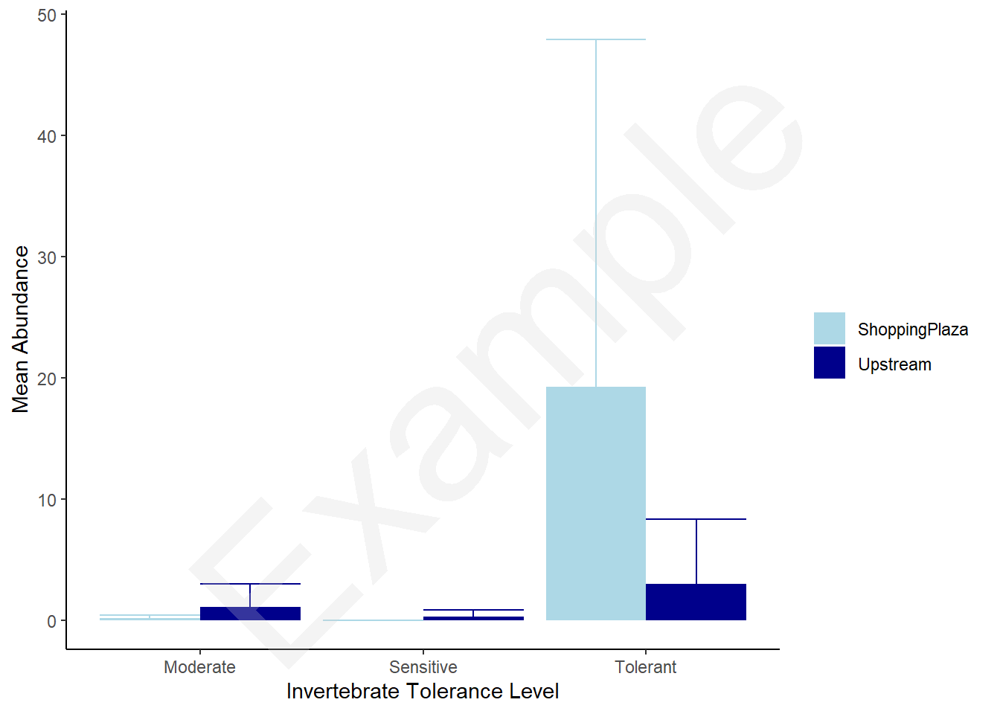

library(ggplot2)
library(dplyr)Lab 4 Analysis
This week, we are analyzing the data from our stream quality assessments. I want to make a figure to associate with the analysis comparing the abundance of different groups of organisms. We’ll also want to report our stream health assessment metrics.
Our hypothesis states that less disturbed streams will have better habitat quality, thus supporting a higher abundance of sensitive and moderate taxa while the poor-quality stream will have a higher abundance of tolerant taxa. To do this we have a response variable of taxa abundance (count/continuous data) and a predictor of stream site (Categorical with two levels: “ShoppingPlaza” and “Upstream”). However, we also have taxa group with three levels: Tolerant, Moderate, and Sensitive. Because taxa count is our response variable, will will need three analyses, one for each level of taxa type. Thus we will only compare “Is there a significant difference between the plaza and the upstream site in terms of tolerant taxa abundance”, then ask that same comparison for moderate, and sensitive taxa (it’s like having three different response variables). We will use a t-test, or more likely a mann-whitney U-test to compare the two levels of site for each response variable.
Before you get started, make sure to load all the packages you might want:
Look below for where to get which datasets:
Stream Quality
While this is not necessary for just comparing two site, we did the stream health assessment form to score the stream on a standarized unit. Reporting these data in a table will look nice and add value to the worksheet. This tells a reader how different these two streams qualitatively are.
You can access our stream health assessment data here.
If you download the data you can read it in the same way we always have
setwd('path/to/your/wd')
stream_quality <- read.csv('stream_quality.csv')stream_quality <- read.csv('https://raw.githubusercontent.com/USC-Ecology-Lab/Lab_4_Urban-Stream-Ecology/main/data/stream_quality.csv')You can check out the data before you get started:
View(stream_quality)For each site, we have 10 evaluation parameters, on a score of one-to-ten. To summarize this data, we just add up all ten parameters for each site. We can do that using dplyr language:
stream_quality |>
group_by(Site) |>
summarize(total_score = sum(Score))# A tibble: 2 × 2
Site total_score
<chr> <dbl>
1 ShoppingPlaza 53.5
2 Upstream 71.5So our qualitative assessment suggests that the ShoppingPlaza is considerably poorer quality than the Upstream habitat. The score is out of 100, so the ShoppingPlaza gets an F while the Upstream gets a C-! This would be a nice table to include in your figures section of the worksheet. Make sure to review how to format table captions (vs figure captions).
Macroinvertebrate assessment
Now we can test the hypothesis. As described above we’ll have three response variables, abundance of tolerant, moderate, and sensitive taxa. We’ll be comparing abundance at two levels (ShoppingPlaza and Upstream). So we need to run three t-tests/Mann Whitney U-tests.
First, you can get your data here.
You can load it into r the same way we always have - with read.csv. I’m going to assign the file to a variable named macro_survey
If you download the data you can read it in the same way we always have
macro_survey <- read.csv('macro_survey.csv')You can read it straight from the internet:
macro_survey <- read.csv('https://raw.githubusercontent.com/USC-Ecology-Lab/Lab_4_Urban-Stream-Ecology/main/data/macro_survey.csv')Now before we do anything, take a look at the data. You’ll notice that there are records for each survey (kick seine haul) with a row for each possible taxa we observed. Now we don’t really care at that level of specificity.
View(macro_survey)We want to group things by Tolerant, Moderate, or Sensitive. So let’s create a new dataframe which adds taxa counts into those groups for each survey, we can use dplyr language here and group by tolerance levels, site, and survey. We can assign this new dataframe to a variable called macro_by_group. We will mostly work with this from here on out:
macro_by_group <- macro_survey |>
group_by(Tolerance, Site, Survey) |>
summarize(count = sum(Count))Now let’s get into the meat of this worksheet:
While we do have three separate analyses to run, we can still fit all the data on the same plot. Again this figure will be similar to some work we’ve done before making a grouped barplot with standard deviation shown.
First, we’ll need to make our summary dataframe which we can plot from:
# create sumamry df
macro_plot_df <- macro_by_group |>
group_by(Tolerance, Site) |>
summarize(mean_count = mean(count),
sd_count = sd(count))Now lets make our plot using ggplot:
ggplot(macro_plot_df) +
geom_bar(aes(x = Tolerance, y = mean_count,
fill = Site),
stat = 'identity', position = 'dodge') +
geom_errorbar(aes(x = Tolerance, ymin = mean_count,
ymax = mean_count + sd_count,
color = Site),
position = 'dodge') +
scale_color_manual(values = c('lightblue', 'darkblue')) +
scale_fill_manual(values = c('lightblue', 'darkblue')) +
labs(x = 'Invertebrate Tolerance Level',
y = 'Mean Abundance',
fill = "", color = "") +
theme_classic()
This figure looks nice! Just by glancing at it, we can see that the tolerant taxa were most abundant on average at both sites. However, more so at the Shopping Plaza. We can can see there is pretty high variation within sites, particularly at the shopping plaza. That could be due to clustering of clams in the sediment or differences in kicking efficiency of samplers.
Before we embark on the statstical analysis, we need to decide whether or not to do a t-test or a mann whitney U-test. The core difference is that the t-test assumes that the data are normally distributed (or at least we have a fairly large sample size).
To check for normality we can make some figures. Note these are not figures we need to share (don’t put it in your worksheet). But we want to see this for ourselves.
For the simple analyses, I’m just going to work with the tolerant taxa. However, you will want to repeat this analysis for moderate and sensitive taxa. To do this, we can make a new dataframe which filters macro_by_group to just have what we are focusing on. Let’s call it Tolerant_group
Tolerant_group <- macro_by_group |>
filter(Tolerance == 'Tolerant')Now we can visualize the distribution of data for each site. Note, I don’t really care if you understand this code (it isn’t ggplot/dplyr so it is a little more complex and uses base R logic). However, the main thing to take away is evaluating if the data are normal:
# check assumption of normality
Tolerant_group$count[Tolerant_group$Site == 'ShoppingPlaza'] |>
density() |>
plot(main = 'ShoppingPlaza')Tolerant_group$count[Tolerant_group$Site == 'Upstream'] |>
density() |>
plot(main = 'Upstream')We can see the data are fairly right-skewed and zero-inflated. We also have a fairly small sample size (<25) so let’s use the non-parametric test. This is a Mann Whitney U test.
If you jumped to this tab without doing the assumption checking you’ll have some issues. Mainly because we’ve already made our filtered dataframe. Make sure you have created a dataframe, filtered by tolerance group!
Again here I’m just going to do the analysis for Tolerant taxa, but you will want to repeat the same analysis for moderate and sensitive taxa. You can do this by changing filter(Tolerance == 'Tolerant') to filter(Tolerance == 'Sensitive') (or moderate). Make sure that you consider renaming the dataframe from Tolerant_group to sensitive or whatever. I’ll also save you the trouble of plotting and tell you the data are all non-normal and we should use the Mann Whitney test like below for all tolerance levels.
To run the mann-whitney U test in R we use the wilcox.test function and the formula layout. There’s some additional arguments as well.
wilcox.test(count ~ Site, data = Tolerant_group,
exact = FALSE, conf.int = TRUE)
Wilcoxon rank sum test with continuity correction
data: count by Site
W = 180.5, p-value = 0.01102
alternative hypothesis: true location shift is not equal to 0
95 percent confidence interval:
0.9999634 15.9999727
sample estimates:
difference in location
4.999996 Here, we have a small p-value which suggests the two groups are significantly different. Our confidence interval says that we think, with 95% confidence, the true difference in tolerant taxa abundance between the Upstream and shopping plaza point is between ~1 and ~16 individuals per kick-net haul. This lines up well with what we visually can deduce from our bar chart.
Repeat this for Sensitive and Moderate taxa.
Here, I’m keeping with the dplyr approach to filter, but I’m storing all three dataframes in one list. I can make them in a loop. Then I can run the mann-whitney U test in a loop for each taxa and see all output at once! You can see all I’m really changing is rather than typing “Tolerant” as my filter, I loop through the unique levels of Tolerance column in macro_by_group dataframe. Then I can filter on the ‘level’ iterator. I then run the test in the same loop but print out my level at the top so I can make sense of the data:
tolerance_levels <- list()
for(level in unique(macro_by_group$Tolerance)) {
tolerance_levels[[level]] <- macro_by_group |>
filter(Tolerance == level)
print(level)
wilcox.test(count ~ Site, data = tolerance_levels[[level]],
exact = FALSE, conf.int = TRUE) |>
print()
}[1] "Moderate"
Wilcoxon rank sum test with continuity correction
data: count by Site
W = 82, p-value = 0.05878
alternative hypothesis: true location shift is not equal to 0
95 percent confidence interval:
-9.999325e-01 1.336044e-05
sample estimates:
difference in location
-5.32433e-05
[1] "Sensitive"
Wilcoxon rank sum test with continuity correction
data: count by Site
W = 99, p-value = 0.1
alternative hypothesis: true location shift is not equal to 0
95 percent confidence interval:
-6.571325e-05 0.000000e+00
sample estimates:
difference in location
0
[1] "Tolerant"
Wilcoxon rank sum test with continuity correction
data: count by Site
W = 180.5, p-value = 0.01102
alternative hypothesis: true location shift is not equal to 0
95 percent confidence interval:
0.9999634 15.9999727
sample estimates:
difference in location
4.999996 Looking at all the data, we don’t have a significant difference in abundance of the sensitive or moderate groups. This is somewhat surprising and something to think about in your discussion. A key thing to think about is that sensitive taxa are completely absent from the Shopping Plaza site. The lack of significance from the test comes from the fact we don’t have enough data to be confident that the population abundance is significantly different than 0 at the Upstream site. This is where stats and biology can differ a bit. While in a statistics world you are forced to say somthing like “we fail to reject the null hypothesis that there is a significant difference in sensitive taxa abundance between the plaza and upstream sites”. In the biology world we want to evaluate if stream quality effects who lives there. While the sensitive taxa were sparse at the upstream site, they were totally absent from the plaza site. This alone provides weak support for the hypothesis. We also would want to note that we sampled directly following a large rain event at the upstream sight. This could have reduced the population sizes with large flusing and our results may be deflated compared to the average stream value. We might want to consider extending this study to sample at various time points following large disturbances.
That is something to address in your discussion.
Bonus: Diversity Assessment
In our original approach, we just compared if there is a significant difference in abundance between the two sites.
However, we could look at a metric like diversity rather than abundance. Let’s do that here!
For this analyses, we don’t want to use the processed data. We want to use the raw data. You can access that here
Since this is bonus, I’m just going to read in from my website directly. You should know how to locally import if that’s what you’re doing
raw_macro <- read.csv('https://raw.githubusercontent.com/USC-Ecology-Lab/Lab_4_Urban-Stream-Ecology/main/data/raw_macro_survey.csv')We’ll use code similar to lab 2 here. We don’t necessarily care about the species, just what are the differences in diversity from each kicknet haul?
# We can write a function to do this repeatedly!
diversity_calculator <- function(count) {
p <- count / sum(count) # create counts
lnp <- log(p)
H <- -sum(p * lnp)
return(H)
}
diversity_df <- raw_macro |>
group_by(Site, Survey) |>
summarise(H = diversity_calculator(Count))One issue here is that in sites where there were no taxa, the calculation messes up and reports NaN (not a number). However, we can say that having 0 taxa is the same Shannon Wiener value as all of one taxa (essentially no diversity). So let’s change to NaNs to zeros:
diversity_df$H[is.nan(diversity_df$H)] <- 0Now we can compare H between sites with a mann-whitney U test:
wilcox.test(H ~ Site, data = diversity_df,
exact = FALSE, conf.int = T)
Wilcoxon rank sum test with continuity correction
data: H by Site
W = 100, p-value = 0.3024
alternative hypothesis: true location shift is not equal to 0
95 percent confidence interval:
-2.170960e-05 6.642698e-05
sample estimates:
difference in location
-9.031466e-06 So this suggests there is not a significant difference in the H (shannon wiener diversity index) between the two sites. Overall diversity was very low at both locations. However, it is again likely driven by our small sampling size and the large flushing event which may have pushed out some of the sensitive macro invertebrates. However, this is a good example of when indicator species are valuable. If the diversity is low, but occupied by native, sensitive taxa the stream is likely healthier than one with massive invasive populations. This difference is not captured by the a taxonomic agnostic approach like the Shannon Wiener index